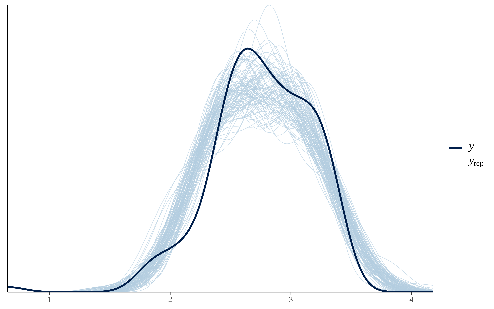
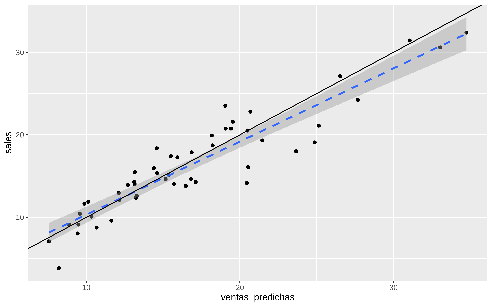
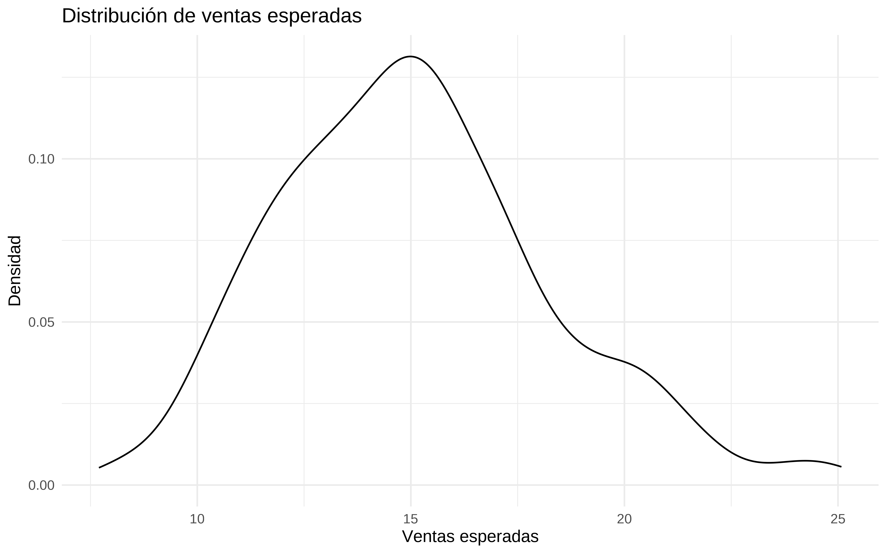
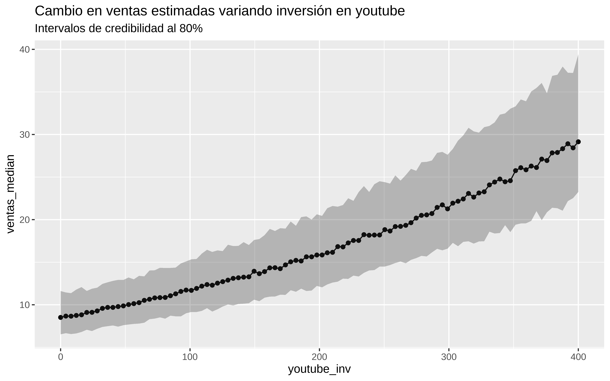
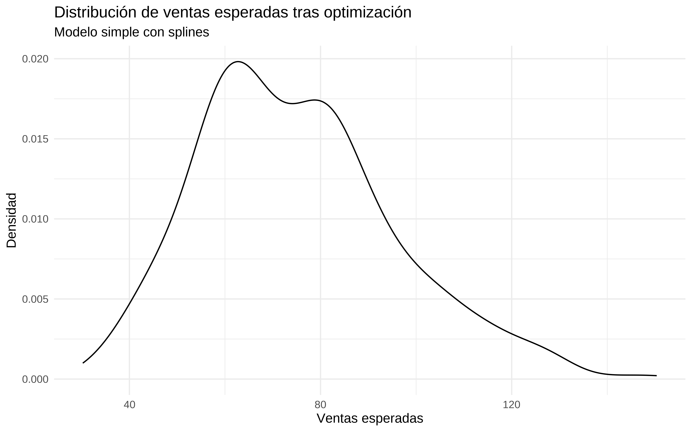
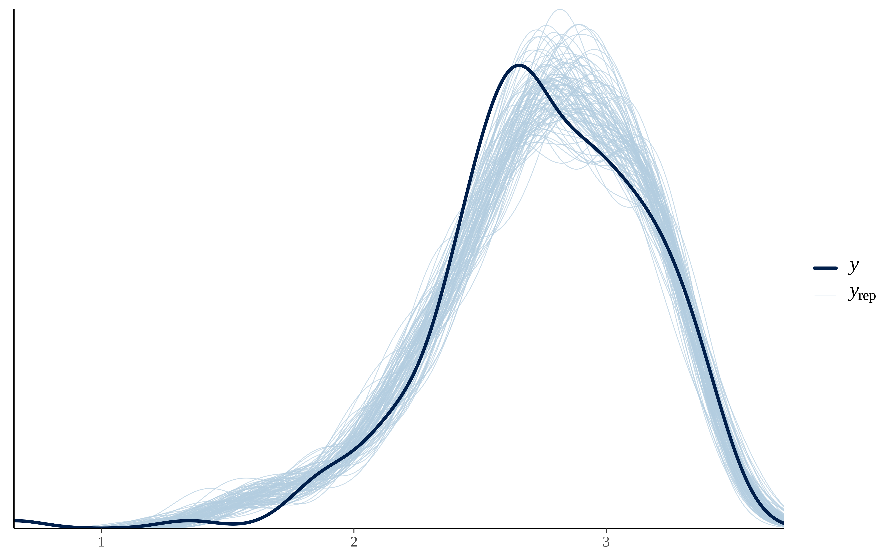
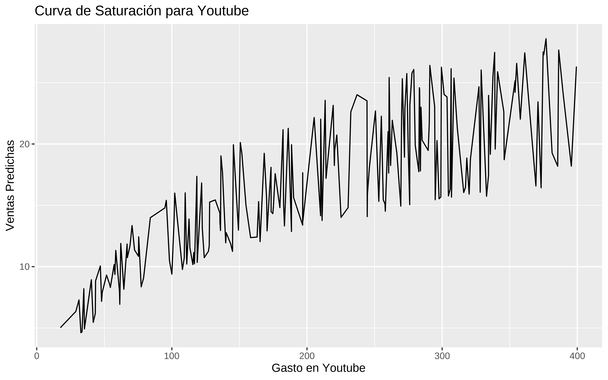
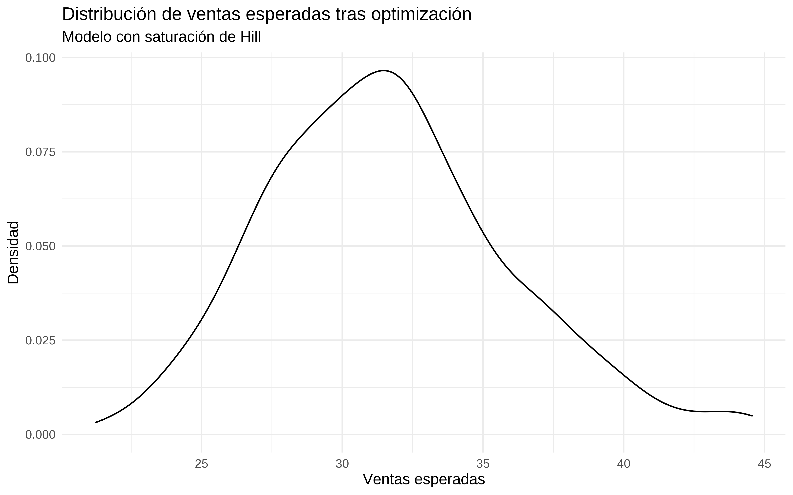

Show the code
library(datarium)
datos <- marketingHe de reconocer que mi conocimiento sobre lo que se ha dado en llamar el Marketing/Media Mix Modelling es más bien escaso por no decir que inexistente. No obstante, una reunión el otro día en el trabajo hizo despertar mi curiosidad. Así que voy a contar un poco lo que he aprendido.
Pues en teoría es un intento de inferencia causal, que intenta responder a la pregunta de ¿qué pasa con las ventas si aumento mi inversión publicitaria en un canal a ? ¿ Y si cambio por completo el mix de gasto en publicidad? ¿Si tengo un presupuesto Z, cuál es la forma óptima de asignar gasto a cada medio?
Bien, pues para poder contestar a estas preguntas lo primero de todo es asumir que las ventas están relacionadas e incluso son causa de la inversión en publicidad. Suena a palabras mayores, desde luego, pero que le vamos a hacer, esto es lo que hay.
Uno podría (y debería) pintar un DAG que expresase lo que creemos saber sobre la relación entre las variables. Quizá el gasto en radio influya en que el gasto en google sea más eficaz, y cosas así. Pero como yo estoy empezando a aprender sobre este tema, voy a partir del supuesto, de que una regresión múltiple me permite expresar las relaciones causales entre las variables, y además que se dan todo el resto de supuestos para la inferencia causal y por tanto, podría interpretar los coeficientes como efectos causales. Si, ya lo sé, esto es un triple salto mortal, pero es lo que se hace todos los días en las empresas. Ya habrá tiempo de cuestionar estas cosas.
En la librería datarium tenemos unos datos de marketing que nos pueden servir
library(datarium)
datos <- marketingEstos datos son muy sencillos, son 200 filas y 4 columnas que se corresponden con la inversión publicitaria en 3 canales (youtube, facebook, newspaper) y una última columna con el monto de las ventas.
dim(datos)
#> [1] 200 4
head(datos)
#> youtube facebook newspaper sales
#> 1 276.12 45.36 83.04 26.52
#> 2 53.40 47.16 54.12 12.48
#> 3 20.64 55.08 83.16 11.16
#> 4 181.80 49.56 70.20 22.20
#> 5 216.96 12.96 70.08 15.48
#> 6 10.44 58.68 90.00 8.64Leyendo la documentación sobre este conjunto de datos se podría asumir que los datos están ordenados por fechas, voy a suponer que cada fila corresponde a una semana, así que voy a pegar una variable de semana y otra que sea simplemente del 1 al 200.
datos$fecha_arbitraria <- seq.Date(as.Date("2020-01-02"), length.out =200, by = "week")
datos$semana <- lubridate::week(datos$fecha_arbitraria)
datos$time <- 1:200
datos$mes <- lubridate::month(datos$fecha_arbitraria)
datos$anyo <- lubridate::year(datos$fecha_arbitraria)
head(datos)
#> youtube facebook newspaper sales fecha_arbitraria semana time mes anyo
#> 1 276.12 45.36 83.04 26.52 2020-01-02 1 1 1 2020
#> 2 53.40 47.16 54.12 12.48 2020-01-09 2 2 1 2020
#> 3 20.64 55.08 83.16 11.16 2020-01-16 3 3 1 2020
#> 4 181.80 49.56 70.20 22.20 2020-01-23 4 4 1 2020
#> 5 216.96 12.96 70.08 15.48 2020-01-30 5 5 1 2020
#> 6 10.44 58.68 90.00 8.64 2020-02-06 6 6 2 2020Pintamos
library(tidyverse)
datos %>%
ggplot(aes(fecha_arbitraria, sales)) +
geom_point() +
geom_line()En estas cosas de marketing mix modelling hay algunas cosillas peculiares. La primera es que se asume, y no me parece mal, que en un instante t la inversión publicitaria que “causa” las ventas no es sólo la del instante t sino que también hay cierto efecto “remanente” de la inversión pasada. Y por tanto en vez de considerar la variable tal cual en un instante t se considera algo como
\[ X_{Adstock} = X_t + \lambda_{1} \times X_{t-1} + ...\lambda_{n} \times X_{t-n} \]
pero además vamos a poner un período de olvido de 2 .
En R podemos hacerlo de la siguiente forma. Por ejemplo para facebook
Se supone que los datos están ordenados de fecha más antigua a más reciente. El criterio de poner set_rate_fb = 0.1 ha sido arbitrario, pero se podría estimar.
#set adstock fb rate
set_rate_fb <- 0.1
set_memory <- 2
get_adstock_fb <- rep(set_rate_fb, set_memory+1) ^ c(0:set_memory)
ads_fb <- stats::filter(c(rep(0, set_memory), datos$facebook), get_adstock_fb, method="convolution")
ads_fb <- ads_fb[!is.na(ads_fb)]
head(datos$facebook)
#> [1] 45.36 47.16 55.08 49.56 12.96 58.68
head(ads_fb)
#> [1] 45.3600 51.6960 60.2496 55.5396 18.4668 60.4716
plot(seq(1,length(datos$facebook)), datos$facebook, type="h",
main = "Adstocked Facebook",
xlab="Time (Weeks)", ylab="Facebook",
ylim=c(0, max(c(datos$facebook, ads_fb))),
frame.plot=FALSE)
lines(ads_fb, col="blue")Hacemos lo mismo para resto de canales, con diferente valor
#set adstock youtube rate
set_rate_yt <- 0.15
set_memory <- 2
get_adstock_youtube <- rep(set_rate_yt, set_memory+1) ^ c(0:set_memory)
#set adstock news rate
set_rate_news <- 0.25
set_memory <- 2
get_adstock_news <- rep(set_rate_news, set_memory+1) ^ c(0:set_memory)
ads_youtube <- stats::filter(c(rep(0, set_memory), datos$youtube), get_adstock_youtube, method="convolution")
ads_youtube <- ads_youtube[!is.na(ads_youtube)]
#adstocked newpaper
ads_news <- stats::filter(c(rep(0, set_memory), datos$newspaper), get_adstock_news, method="convolution")
ads_news <- ads_news[!is.na(ads_news)]
#plot
datos <- cbind(datos, ads_fb, ads_youtube, ads_news)
head(datos)
#> youtube facebook newspaper sales fecha_arbitraria semana time mes anyo
#> 1 276.12 45.36 83.04 26.52 2020-01-02 1 1 1 2020
#> 2 53.40 47.16 54.12 12.48 2020-01-09 2 2 1 2020
#> 3 20.64 55.08 83.16 11.16 2020-01-16 3 3 1 2020
#> 4 181.80 49.56 70.20 22.20 2020-01-23 4 4 1 2020
#> 5 216.96 12.96 70.08 15.48 2020-01-30 5 5 1 2020
#> 6 10.44 58.68 90.00 8.64 2020-02-06 6 6 2 2020
#> ads_fb ads_youtube ads_news
#> 1 45.3600 276.1200 83.0400
#> 2 51.6960 94.8180 74.8800
#> 3 60.2496 34.8627 101.8800
#> 4 55.5396 186.0975 94.3725
#> 5 18.4668 244.6944 92.8275
#> 6 60.4716 47.0745 111.9075Pues en esta primera parte de MMM estilo compadre se trata simplemente de estimar las ventas en base al tiempo y al adstock, es decir, un ejercicio de estimación de series temporales. De hecho, las consultoras que se dedican a estos temas hacen una serie de modelos lineales, a veces encadenados (y sin ajustar conjuntamente, lo cual es un error importante), y algunas asumen modelos lineales sin Intercept , es decir, tienen la asunción fuerte (y errónea) que todas las ventas se deben exclusivamente a variables modeladas y que a inversión 0, las ventas no existen. Yo no voy a asumir semejante cosa, dios me libre.
Pues ya que el software lo permite, vamos a hacer un modelito, pero bayesiano.
library(cmdstanr)
library(brms)En vez de modelar las ventas , modelo su logaritmo neperiano, por qué? porque me da la gana, y porque a veces así se consiguen mejores resultados. En realidad habría que probar ambas cosas. De hecho, quizá sea mejor modelar las ventas en vez del log(ventas) en aras a la interpretabilidad de los parámetros. Podéis probar, yo ya lo voy a dejar con logaritmo.
También meto un término de splines, y entreno con los primeros 150 datos y dejo de test los últimos 50
train <- datos[1:150, ]
test <- datos[151:200, ]
mod_splines <- brm(log(sales) ~ ads_fb + ads_youtube + ads_news + s(time, k = 10),
data = train,
family = gaussian(),
backend = "cmdstanr",
cores = 4,
file = here::here("2024/06/mod_splines") )
summary(mod_splines)
#> Family: gaussian
#> Links: mu = identity; sigma = identity
#> Formula: log(sales) ~ ads_fb + ads_youtube + ads_news + s(time, k = 10)
#> Data: train (Number of observations: 150)
#> Draws: 4 chains, each with iter = 2000; warmup = 1000; thin = 1;
#> total post-warmup draws = 4000
#>
#> Smoothing Spline Hyperparameters:
#> Estimate Est.Error l-95% CI u-95% CI Rhat Bulk_ESS Tail_ESS
#> sds(stime_1) 0.24 0.25 0.01 0.92 1.00 873 1522
#>
#> Regression Coefficients:
#> Estimate Est.Error l-95% CI u-95% CI Rhat Bulk_ESS Tail_ESS
#> Intercept 1.82 0.05 1.72 1.92 1.00 4112 3263
#> ads_fb 0.01 0.00 0.01 0.01 1.00 4291 2309
#> ads_youtube 0.00 0.00 0.00 0.00 1.00 3771 2568
#> ads_news 0.00 0.00 -0.00 0.00 1.00 4136 2779
#> stime_1 0.07 0.53 -0.84 1.43 1.00 1088 808
#>
#> Further Distributional Parameters:
#> Estimate Est.Error l-95% CI u-95% CI Rhat Bulk_ESS Tail_ESS
#> sigma 0.20 0.01 0.18 0.23 1.00 3608 3041
#>
#> Draws were sampled using sample(hmc). For each parameter, Bulk_ESS
#> and Tail_ESS are effective sample size measures, and Rhat is the potential
#> scale reduction factor on split chains (at convergence, Rhat = 1).Uno de los chequeos básico es comparar la variable respuesta en los datos con la que genera el modelo.
Se pinta la variable real y las generadas mediante la posterior predictive . Vamos a pintar 100 posteriors
pp_check(mod_splines, ndraws = 100)
y no tiene mala pinta.
Veamos como predice el modelo para los datos de test.
predicciones <- posterior_predict(mod_splines, newdata = test, ndraws = 1000)
predicciones_medias <- apply(predicciones, 2, mean)
test$ventas_predichas <- exp(predicciones_medias)Vemos alguna métrica como el RMSE o el MAE
yardstick::rmse(test, sales, ventas_predichas)
#> # A tibble: 1 × 3
#> .metric .estimator .estimate
#> <chr> <chr> <dbl>
#> 1 rmse standard 2.50
yardstick::mae(test, sales, ventas_predichas)
#> # A tibble: 1 × 3
#> .metric .estimator .estimate
#> <chr> <chr> <dbl>
#> 1 mae standard 1.90Pintamos las ventas predicas vs las reales en test, para ver si caen cerca de la recta \(y = x\)
test %>%
ggplot(aes(x = ventas_predichas, y = sales)) +
geom_point() +
geom_smooth(method ="lm", linetype = "dashed") +
geom_abline(intercept = 0, slope = 1)
Y bueno, ni tan mal.
Pues el tema en esto del MMM consiste ahora en encontrar cuánto hay que invertir en cada canal para optimizar las ventas , pero sujeto a unas restricciones, por ejemplo presupuestarias.
Todo esto con la asunción de que el modelo ajustado representa la verdadera relación causal y no sólo asociación.
El principal problema que yo veo a estas cosas es que si yo he entrenado con un rango de gasto histórico en un canal A, el modelo puede haber estimado que a más gasto más ventas y extrapolar mucho más allá de lo aconsejable.
Lo primero es crear una función que simule las ventas obtenidas.
Suponemos que nuestros nuevos datos irán temporalmente detrás de los datos de train, y que por tanto el adstock se ve influido por datos antiguos
simular_ventas_siguiente_periodo <- function(facebook_new, youtube_new, news_new, modelo) {
nuevo_time = max(train$time) + 1
# obtener add_stock
ads_fb <- stats::filter(c(rep(0, set_memory), train$facebook, facebook_new), get_adstock_fb, method="convolution")
ads_fb <- ads_fb[!is.na(ads_fb)]
ads_fb <- tail(ads_fb, 1)
ads_youtube <- stats::filter(c(rep(0, set_memory), train$youtube, youtube_new), get_adstock_youtube, method="convolution")
ads_youtube <- ads_youtube[!is.na(ads_youtube)]
ads_youtube <- tail(ads_youtube, 1)
ads_news <- stats::filter(c(rep(0, set_memory), train$newspaper, news_new), get_adstock_news, method="convolution")
ads_news <- ads_news[!is.na(ads_news)]
ads_news <- tail(ads_news, 1)
newdata = data.frame(ads_fb = ads_fb, ads_youtube = ads_youtube, ads_news = ads_news, time = nuevo_time)
# estimamos con el modelo
ventas_simuladas <- posterior_predict(modelo, newdata = newdata, ndraws = 500)
return(as.numeric(ventas_simuladas))
}La probamos, incrementando en 1% la media de gasto en cada canal que se ha visto en los datos de entrenamiento
facebook_new <- mean(train$facebook) * 1.01
youtube_new <- mean(train$youtube) * 1.01
news_new <- mean(train$newspaper) * 1.01
# Obtenemos la posteriori, teniendo en cuenta el adstock.
simulaciones <- simular_ventas_siguiente_periodo(facebook_new, youtube_new, news_new, mod_splines)
simulaciones %>%
as_tibble() %>%
ggplot(aes(x = exp(value))) +
geom_density() +
labs(title = "Distribución de ventas esperadas",
x = "Ventas esperadas",
y = "Densidad") +
theme_minimal()
Al haber modelado el log de las ventas, la interpretación de los parámetros ya no es tan directa, pero podemos utilizar la función de simular ventas para hacer análisis de sensibilidad y contestar a qué pasa si varío las cosas de tal o cual manera. Esto es relativamente simple y puede aportar más valor que incluso la optimización, puesto que permite al usuario jugar con cuánto invertir en cada medio. Y en cierta forma sentirse realizado, aún cuando , como he advertido la relación causal esté sólo en su imaginación.
Dejamos los valores de inversión en facebook y news como la media vista en train y variamos la inversión en youtube.
facebook_mean = mean(train$facebook)
news_mean = mean(train$newspaper)
youtube_grid = seq(0, 400, length.out = 100)
simular_ventas_grid_youtube <- partial(simular_ventas_siguiente_periodo, facebook_new = facebook_mean,
news_new = news_mean, modelo = mod_splines)
sim_grid_youtube <- youtube_grid %>% map(simular_ventas_grid_youtube)
# sumarizo las 100 posteriors por su mediana, por simpliciddad
sim_grid_youtube_medians <- sim_grid_youtube %>% map_dbl(median)
sim_grid_youtube_means <- sim_grid_youtube %>% map_dbl(mean)
sim_grid_youtube_low <- sim_grid_youtube %>% map_dbl(quantile, probs = 0.1)
sim_grid_youtube_high <- sim_grid_youtube %>% map_dbl(quantile, probs = 0.9)
to_plot <- data.frame(youtube_inv = youtube_grid,
ventas_median = exp(sim_grid_youtube_medians),
ventas_low = exp(sim_grid_youtube_low),
ventas_high = exp(sim_grid_youtube_high)
)
to_plot %>%
ggplot(aes(x = youtube_inv, y = ventas_median)) +
geom_point() +
geom_line() +
geom_ribbon(aes(ymin = ventas_low, ymax = ventas_high), alpha = 0.3) +
labs(
title = "Cambio en ventas estimadas variando inversión en youtube",
subtitle = "Intervalos de credibilidad al 80%"
)
Volvamos a la optimización
Bien, pues ahora tenemos que construir la función a optimizar. Vamos a poner un presupuesto máximo de 450. Y en la función a optimizar añadimos una penalización alta si la suma de los valores a optimizar supera este presupuesto. Aparte de este valor máximo también vamos a poner umbrales al valor mínimo y máximo del gasto en cada canal.
funcion_objetivo <- function(facebook_new, youtube_new, news_new, modelo, presupuesto = 450) {
penalizacion <- 0
# Calcular la suma de los parámetros
suma_par <- sum(facebook_new, youtube_new, news_new)
# Si la suma de los parámetros supera el presupuesto, añadir una penalización
if (suma_par > presupuesto) {
penalizacion <- 1e6 * (suma_par - presupuesto)^2
}
ventas_simuladas <- simular_ventas_siguiente_periodo(facebook_new, youtube_new, news_new, modelo)
# para optimizar necesitamos un solo valor, no las posteriores, sumarizamos con la media, pero podría
# ser otra cosa
ventas_esperadas <- mean(ventas_simuladas)
return(list(Score = -ventas_esperadas + penalizacion)) # Negativo para maximizar
}
(prueba <- funcion_objetivo(facebook_new, youtube_new, news_new, modelo= mod_splines))
#> $Score
#> [1] -2.685504
# las ventas serán el exp de menos el resultado
exp(-prueba$Score)
#> [1] 14.66559Ahora sería optimizar esa función con algún solver, yo voy a usar una optimización bayesiana y en procesamiento paralelo
library(ParBayesianOptimization)
library(doParallel)
library(foreach)# Configurar el clúster para usar 5 núcleos
num_cores <- 5
cl <- makeCluster(num_cores)
registerDoParallel(cl)Límites de gasto. ¿Por qué pongo estos? Porque quiero, y he añadido que el mínimo en news sea 13
bounds <- list(
facebook_new = c(0, 224)
, youtube_new = c(0, 400)
, news_new = c(13, 34)
)Me creo una función parcial para rellenar por defecto algunos parámetros de la función como el modelo a usar y el presupuesto. Esto lo hago porque muchas veces los solvers requieren quela función objetivo tenga sólo un argumento.
# Aquí pongo un presupuesto máximo de 500
f_objetivo_partial <- partial(funcion_objetivo, modelo = mod_splines, presupuesto = 500)
f_objetivo_partial
#> <partialised>
#> function (...)
#> funcion_objetivo(modelo = mod_splines, presupuesto = 500, ...)Para hacer la computación en paralelo hay que copiar las librerías y los datos y funciones en cada “conexión”, al menos para usar esta librería
Las librerías hay que enviarlas a cada proceso de R con clusterEvalQ y las funciones y datos usados con clusterExport. Seguro que hay una forma de no mandar una copia de los datos a cada proceso, y lo he hecho alguna vez, pero no recuerdo como.
clusterEvalQ(cl, {
library(ParBayesianOptimization)
library(tidyverse)
library(brms)
})
#> [[1]]
#> [1] "brms" "Rcpp"
#> [3] "lubridate" "forcats"
#> [5] "stringr" "dplyr"
#> [7] "purrr" "readr"
#> [9] "tidyr" "tibble"
#> [11] "ggplot2" "tidyverse"
#> [13] "ParBayesianOptimization" "stats"
#> [15] "graphics" "grDevices"
#> [17] "utils" "datasets"
#> [19] "methods" "base"
#>
#> [[2]]
#> [1] "brms" "Rcpp"
#> [3] "lubridate" "forcats"
#> [5] "stringr" "dplyr"
#> [7] "purrr" "readr"
#> [9] "tidyr" "tibble"
#> [11] "ggplot2" "tidyverse"
#> [13] "ParBayesianOptimization" "stats"
#> [15] "graphics" "grDevices"
#> [17] "utils" "datasets"
#> [19] "methods" "base"
#>
#> [[3]]
#> [1] "brms" "Rcpp"
#> [3] "lubridate" "forcats"
#> [5] "stringr" "dplyr"
#> [7] "purrr" "readr"
#> [9] "tidyr" "tibble"
#> [11] "ggplot2" "tidyverse"
#> [13] "ParBayesianOptimization" "stats"
#> [15] "graphics" "grDevices"
#> [17] "utils" "datasets"
#> [19] "methods" "base"
#>
#> [[4]]
#> [1] "brms" "Rcpp"
#> [3] "lubridate" "forcats"
#> [5] "stringr" "dplyr"
#> [7] "purrr" "readr"
#> [9] "tidyr" "tibble"
#> [11] "ggplot2" "tidyverse"
#> [13] "ParBayesianOptimization" "stats"
#> [15] "graphics" "grDevices"
#> [17] "utils" "datasets"
#> [19] "methods" "base"
#>
#> [[5]]
#> [1] "brms" "Rcpp"
#> [3] "lubridate" "forcats"
#> [5] "stringr" "dplyr"
#> [7] "purrr" "readr"
#> [9] "tidyr" "tibble"
#> [11] "ggplot2" "tidyverse"
#> [13] "ParBayesianOptimization" "stats"
#> [15] "graphics" "grDevices"
#> [17] "utils" "datasets"
#> [19] "methods" "base"
clusterExport(cl,c('simular_ventas_siguiente_periodo', 'train','bounds', 'funcion_objetivo','f_objetivo_partial', 'mod_splines',
'set_memory', 'get_adstock_fb', 'get_adstock_youtube',
'get_adstock_news'))Y ya podríamos optimizar. He puesto un máximo de 200 iteraciones y un tiempo máximo de 300 segundos. Para ver más opciones consultar la ayuda de la función, que hace optimización usando procesos gaussianos
bayes_opt <- bayesOpt(
FUN = f_objetivo_partial,
bounds = bounds,
initPoints = 10,
acq = "ei",
iters.n = 200,
iters.k = 10,
kappa = 2,
eps = 0.0,
parallel = TRUE,
otherHalting = list(timeLimit = 300)
)Y los resultados los podemos ver ordenando por Score, el mejor resultado será el que tenga menor Scores (estamos minimizando )
# Mostrar los resultados
print(bayes_opt)
#> Class: bayesOpt
#>
#> Epochs: 13
#> Iterations: 148
#> Average FUN Seconds: 0.24
#> Highest FUN Seconds: 0.41
#> Final Expected Improvement: 6.606123e-231
#> GP Updated: TRUE
#> Stop Status: Stopped Early. See $stopStatus
bayes_opt$scoreSummary %>%
arrange(Score)
#> Epoch Iteration facebook_new youtube_new news_new gpUtility acqOptimum
#> <num> <int> <num> <num> <num> <num> <lgcl>
#> 1: 8 90 224.0000 255.8944 13.06627 1.311595e-58 FALSE
#> 2: 8 91 222.0084 245.0914 13.73524 6.405097e-56 FALSE
#> 3: 8 92 224.0000 229.4029 14.34005 1.756034e-49 FALSE
#> 4: 8 89 223.7316 229.4891 15.20854 2.357236e-51 TRUE
#> 5: 8 95 220.3587 231.2251 15.05401 9.210383e-56 FALSE
#> ---
#> 144: 1 12 224.0000 399.0365 32.87317 1.441311e-01 FALSE
#> 145: 1 14 224.0000 400.0000 32.09324 1.412303e-01 FALSE
#> 146: 1 19 224.0000 399.1970 33.61362 1.464890e-01 FALSE
#> 147: 1 18 224.0000 400.0000 32.91358 1.449249e-01 FALSE
#> 148: 1 11 224.0000 400.0000 34.00000 1.477505e-01 TRUE
#> inBounds Elapsed Score errorMessage
#> <lgcl> <num> <num> <lgcl>
#> 1: TRUE 0.215 -4.716476e+00 NA
#> 2: TRUE 0.248 -4.700574e+00 NA
#> 3: TRUE 0.240 -4.624920e+00 NA
#> 4: TRUE 0.217 -4.620445e+00 NA
#> 5: TRUE 0.165 -4.610404e+00 NA
#> ---
#> 144: TRUE 0.257 2.430782e+10 NA
#> 145: TRUE 0.203 2.436510e+10 NA
#> 146: TRUE 0.173 2.458957e+10 NA
#> 147: TRUE 0.231 2.462187e+10 NA
#> 148: TRUE 0.310 2.496400e+10 NALos valores óptimos que ha encontrado de gasto en cada canal, cumpliendo las restricciones
(result_bayes <- bayes_opt$scoreSummary %>%
arrange(Score) %>%
head(1) %>%
select(facebook_new, youtube_new, news_new, Score) )
#> facebook_new youtube_new news_new Score
#> <num> <num> <num> <num>
#> 1: 224 255.8944 13.06627 -4.716476Comprobamos que no se ha pasdo del presupuesto
with(result_bayes, sum(facebook_new, youtube_new, news_new))
#> [1] 492.9607Simulamos las ventas que se esperan con esta optimización.
simulaciones_optim <- simular_ventas_siguiente_periodo(result_bayes$facebook_new, result_bayes$youtube_new, result_bayes$news_new,
modelo = mod_splines)
exp(quantile(simulaciones_optim, c(0.2, 0.5, 0.8)))
#> 20% 50% 80%
#> 89.81576 111.37935 147.94021
(p_optimizacion_mod_spline <- simulaciones_optim %>%
as_tibble() %>%
ggplot(aes(x = exp(value))) +
geom_density() +
labs(title = "Distribución de ventas esperadas tras optimización",
subtitle = "Modelo simple con splines",
x = "Ventas esperadas",
y = "Densidad") +
theme_minimal())
Y básicamente esta sería la idea principal de hacer un MMM.
Sin embargo también se considera el concepto de curva de saturación, que no es más que la asunción de que llega un momento en que por más que te gastes en publicidad, no vas a tener más ventas.
Por ejemplo, para eso veamos si eso se ve en los datos
Con los datos reales y gastos en youtube se intuye que podría existir más allá del dominio observado de la variable.
(p_youtube_real <- datos %>%
group_by(ads_youtube) %>%
summarise(ventas_mean = mean(log(sales))) %>%
ggplot(aes(x = ads_youtube, y = ventas_mean)) +
geom_point() +
geom_smooth() +
scale_x_continuous(limits = c(0, 450)) +
scale_y_continuous(limits = c(0, 4)) +
labs(title = "Curva real en los datos",
x = "Gasto en youtube",
y = "Ventas, en log"))(p_facebook_real <- datos %>%
group_by(ads_fb) %>%
summarise(ventas_mean = mean(log(sales))) %>%
ggplot(aes(x = ads_fb, y = ventas_mean)) +
geom_point() +
geom_smooth() +
scale_x_continuous(limits = c(0, 100)) +
scale_y_continuous(limits = c(0, 4)) +
labs(title = "Curva real en los datos",
x = "Gasto en facebook",
y = "Ventas"))Una forma de modelar la curva de saturación que tienen los de marketing es utilizar la saturación de Hill, que viene de la bioquímica y ámbitos similares. Y bueno, tal y como dice Richard McElreath, “ciencia antes que estadística” y quién soy yo para refutar que se use lo de las curvas de saturación de Hill.
Podemos considerar algo como esto pero para cada canal \[ \text{log(ventas)} = \dfrac{\beta \cdot \text{adstock}^{h}}{S^h + \text{adstock}^h} \]
Por lo que tendríamos para cada canal un parámetro \(\beta\) un parámetro \(h\) y un parámetro \(S\) .
Esta función no es lineal en los parámetros, pero podemos definir el modelo generativo y ajustar a los datos usando MCMC
# como no me deja poner splines meto un coeficiente al tiempo.
hill_adstock_formula <- bf(
log(sales) ~ bfb * ads_fb ^ hfb / (Sfb^hfb + ads_fb ^ hfb) +
byoutube * ads_youtube ^ hyou / (Syoutube^hyou + ads_youtube ^ hyou) +
bnews * ads_news ^ hnews / (Snews^hnews + ads_news ^ hnews) + btime * time,
bfb + Sfb + byoutube + Syoutube + bnews + Snews + btime + hfb + hyou + hnews ~ 1,
nl = TRUE
)
# Define los priors para los parámetros del modelo
priors <- c(
prior(normal(0, 10), nlpar = "bfb", lb = 0),
prior(normal(0, 10), nlpar = "Sfb"),
prior(normal(0, 10), nlpar = "byoutube", lb = 0 ),
prior(normal(0, 50), nlpar = "Syoutube"),
prior(normal(0, 50), nlpar = "bnews", lb = -0.1),
prior(normal(0, 50), nlpar = "Snews"),
prior(normal(0, 50), nlpar = "btime", lb = 0),
prior(lognormal(log(1), 0.5), nlpar = "hfb", lb = 0),
prior(lognormal(log(1), 0.5), nlpar = "hyou", lb = 0),
prior(lognormal(log(1), 0.5), nlpar = "hnews", lb = 0)
)
# Ajusta el modelo con brms pero con más iteraciones,
modelo_hill_adstock <- brm(
formula = hill_adstock_formula,
data = datos,
family = gaussian(),
prior = priors,
chains = 4, iter = 6000, warmup = 1000,
control = list( adapt_delta = 0.97),
backend = "cmdstanr",cores = 4, file = here::here("2024/06/mod_hill")
)Como antes, comparamos la distribucion de las ventas con las generadas por el modelo.
# Muestra un resumen del modelo
summary(modelo_hill_adstock)
#> Family: gaussian
#> Links: mu = identity; sigma = identity
#> Formula: log(sales) ~ bfb * ads_fb^hfb/(Sfb^hfb + ads_fb^hfb) + byoutube * ads_youtube^hyou/(Syoutube^hyou + ads_youtube^hyou) + bnews * ads_news^hnews/(Snews^hnews + ads_news^hnews) + btime * time
#> bfb ~ 1
#> Sfb ~ 1
#> byoutube ~ 1
#> Syoutube ~ 1
#> bnews ~ 1
#> Snews ~ 1
#> btime ~ 1
#> hfb ~ 1
#> hyou ~ 1
#> hnews ~ 1
#> Data: datos (Number of observations: 200)
#> Draws: 4 chains, each with iter = 6000; warmup = 1000; thin = 1;
#> total post-warmup draws = 20000
#>
#> Regression Coefficients:
#> Estimate Est.Error l-95% CI u-95% CI Rhat Bulk_ESS Tail_ESS
#> bfb_Intercept 0.69 0.09 0.54 0.88 1.00 2575 2820
#> Sfb_Intercept 34.66 3.59 28.77 42.91 1.00 2990 2447
#> byoutube_Intercept 3.20 0.13 2.99 3.49 1.00 1669 1572
#> Syoutube_Intercept 37.05 3.28 32.19 45.05 1.00 1913 1567
#> bnews_Intercept -0.01 0.06 -0.10 0.14 1.00 2447 2365
#> Snews_Intercept 38.65 31.64 1.38 114.80 1.00 2133 3496
#> btime_Intercept 0.00 0.00 0.00 0.00 1.00 3306 2238
#> hfb_Intercept 2.62 0.44 1.89 3.61 1.00 3007 4464
#> hyou_Intercept 0.84 0.08 0.67 1.01 1.00 1719 1662
#> hnews_Intercept 1.06 0.57 0.34 2.52 1.00 4290 4024
#>
#> Further Distributional Parameters:
#> Estimate Est.Error l-95% CI u-95% CI Rhat Bulk_ESS Tail_ESS
#> sigma 0.13 0.01 0.12 0.14 1.00 4955 6336
#>
#> Draws were sampled using sample(hmc). For each parameter, Bulk_ESS
#> and Tail_ESS are effective sample size measures, and Rhat is the potential
#> scale reduction factor on split chains (at convergence, Rhat = 1).
pp_check(modelo_hill_adstock, ndraws = 100)
Aunque tengo que leer a Carlos sobre el tema de Leave One Out, es una cosa que se utiliza bastante en validación de modelos bayesianos, debido al trabajo de Aki Vehtari, Gelman y Gabry en este campo , ver aquí
El Pareto k diagnostic nos indica que sólo hay problemas con un dato, así que tampoco nos vamos a preocupar mucho.
loo(modelo_hill_adstock)
#>
#> Computed from 20000 by 200 log-likelihood matrix.
#>
#> Estimate SE
#> elpd_loo 114.0 41.6
#> p_loo 25.6 17.7
#> looic -228.0 83.3
#> ------
#> MCSE of elpd_loo is NA.
#> MCSE and ESS estimates assume MCMC draws (r_eff in [0.1, 0.6]).
#>
#> Pareto k diagnostic values:
#> Count Pct. Min. ESS
#> (-Inf, 0.7] (good) 199 99.5% 1122
#> (0.7, 1] (bad) 0 0.0% <NA>
#> (1, Inf) (very bad) 1 0.5% <NA>
#> See help('pareto-k-diagnostic') for details.Veamos que tal predice en test
pred_test <- posterior_predict(modelo_hill_adstock, newdata = test)
test$ventas_predichas_mod_hill <- exp(apply(pred_test, 2, mean))
yardstick::rmse(test,sales, ventas_predichas_mod_hill)
#> # A tibble: 1 × 3
#> .metric .estimator .estimate
#> <chr> <chr> <dbl>
#> 1 rmse standard 1.41
yardstick::mae(test,sales, ventas_predichas_mod_hill)
#> # A tibble: 1 × 3
#> .metric .estimator .estimate
#> <chr> <chr> <dbl>
#> 1 mae standard 1.08Que es mejor predicción que el modelo simple original
# rmse y mae con modelo simple
yardstick::rmse(test,sales, ventas_predichas)
#> # A tibble: 1 × 3
#> .metric .estimator .estimate
#> <chr> <chr> <dbl>
#> 1 rmse standard 2.50
yardstick::mae(test,sales, ventas_predichas)
#> # A tibble: 1 × 3
#> .metric .estimator .estimate
#> <chr> <chr> <dbl>
#> 1 mae standard 1.90Usamos el modelo para obtener predicciones al global de los datos, train y test
predicciones <- posterior_predict(modelo_hill_adstock, newdata = datos, ndraws = 1000)
# Calcular las predicciones medias
predicciones_medias <- apply(predicciones, 2, mean)
# Agregar las predicciones al dataframe de nuevos datos
datos$ventas_predichas <- exp(predicciones_medias)
# Curva de saturación para publicidad
p_youtube_estimada <- datos %>%
group_by(ads_youtube) %>%
summarise(ventas_predichas_mean = median(ventas_predichas),
low = quantile(ventas_predichas, 0.05),
high = quantile(ventas_predichas, 0.95)) %>%
ggplot(aes(x = ads_youtube, y = ventas_predichas_mean)) +
geom_line() +
geom_ribbon(aes(ymin = low, ymax = high), alpha = 0.3) +
labs(title = "Curva de Saturación para Youtube",
x = "Gasto en Youtube",
y = "Ventas Predichas")
p_youtube_estimada
Y esta curva tiene muchos picos, porque en el conjunto de datos original no están todas las posibles combinaciones entre las diferentes inversiones en los canales.
Podríamos obtener las curvas de saturación marginalizando la inversión en un canal, teniendo en cuenta muchas posibles combinaciones de inversiones en los otros canales. Esta sería una forma de aproximarse a la curva de saturación, aunque el volumen de ventas que sale estará sobreestimado, puesto que es un dataset sintético, dónde están sobre-representadas combinaciones de inversiones con valores mucho más altos que los observados en los datos.
# Crear un rango de valores para publicidad y promociones
ads_fb <- seq(0, 400, length.out = 30)
ads_youtube <- seq(0, 400, length.out = 30)
ads_news <- seq(0, 400, length.out = 30)
time <- rep(201, 30)
# Crear un nuevo dataframe para predicciones
nuevos_datos <- expand.grid(
ads_fb = ads_fb,
ads_youtube = ads_youtube,
ads_news = ads_news,
time = time
)
head(nuevos_datos)
#> ads_fb ads_youtube ads_news time
#> 1 0.00000 0 0 201
#> 2 13.79310 0 0 201
#> 3 27.58621 0 0 201
#> 4 41.37931 0 0 201
#> 5 55.17241 0 0 201
#> 6 68.96552 0 0 201
# son demasiados datos , tomo una muestra, que no es pecado
dim(nuevos_datos)
#> [1] 810000 4Combinar todo con todo nos da más de 800 mil filas, lo cual es excesivo. Así que, tal y como se llama este blog, muestrear no es pecado, tomamos una muestra de estos datos sintéticos que también nos vale.
nuevos_datos <- nuevos_datos %>%
sample_n(4000)
predicciones <- posterior_predict(modelo_hill_adstock, newdata = nuevos_datos, ndraws = 1000)
# Calcular las predicciones medias
# Agregar las predicciones, en log de ventas, al dataframe de nuevos datos
nuevos_datos$ventas_predichas <- apply(predicciones, 2, mean)
# Curva de saturación para publicidad
p_youtube_estimada_bis <- nuevos_datos %>%
group_by(ads_youtube) %>%
summarise(ventas_predichas_mean = median(ventas_predichas),
low = quantile(ventas_predichas, 0.05),
high = quantile(ventas_predichas, 0.95)) %>%
ggplot(aes(x = ads_youtube, y = ventas_predichas_mean)) +
geom_line() +
geom_ribbon(aes(ymin = low, ymax = high), alpha = 0.2)+
labs(title = "Curva de Saturación para Youtube",
x = "Gasto en Youtube",
y = "Ventas Predichas")
library(patchwork)
p_youtube_real + p_youtube_estimada_bisNo faltaría más que optimizar la inversión publicitaria que nos saldría con este modelo, y manteniendo mismo presupuesto
f_objetivo_partial_nueva <- partial(funcion_objetivo, modelo = modelo_hill_adstock, presupuesto = 500)
f_objetivo_partial_nueva
#> <partialised>
#> function (...)
#> funcion_objetivo(modelo = modelo_hill_adstock, presupuesto = 500,
#> ...)
# exporto el modelo y la funcion objetivo a los procesos en paralelo
clusterExport(cl,c('f_objetivo_partial_nueva', 'modelo_hill_adstock'))Optimizamos
bayes_opt_nueva <- bayesOpt(
FUN = f_objetivo_partial_nueva,
bounds = bounds,
initPoints = 10,
acq = "ei",
iters.n = 200,
iters.k = 10,
kappa = 2,
eps = 0.0,
parallel = TRUE,
otherHalting = list(timeLimit = 300)
)Y al igual que antes obtenemos los resultados de la optimización
print(bayes_opt_nueva)
#> Class: bayesOpt
#>
#> Epochs: 20
#> Iterations: 210
#> Average FUN Seconds: 0.42
#> Highest FUN Seconds: 0.52
#> Final Expected Improvement: 0.04015286
#> GP Updated: FALSE
#> Stop Status: OK
bayes_opt_nueva$scoreSummary %>%
arrange(Score)
#> Epoch Iteration facebook_new youtube_new news_new gpUtility acqOptimum
#> <num> <int> <num> <num> <num> <num> <lgcl>
#> 1: 0 10 106.27764 353.2145 31.90588 NA FALSE
#> 2: 0 8 88.01751 252.5828 19.90180 NA FALSE
#> 3: 0 4 196.21468 204.5654 18.18625 NA FALSE
#> 4: 0 5 139.55280 198.3905 27.36004 NA FALSE
#> 5: 0 6 38.04579 367.0884 30.14846 NA FALSE
#> ---
#> 206: 19 204 85.60379 0.0000 33.28303 0.03706023 FALSE
#> 207: 19 199 75.84941 0.0000 31.72567 0.03590912 FALSE
#> 208: 20 208 63.99872 0.0000 26.88291 0.04015286 TRUE
#> 209: 20 209 60.25496 0.0000 25.97020 0.03684215 FALSE
#> 210: 19 205 58.79517 0.0000 31.52468 0.01696496 FALSE
#> inBounds Elapsed Score errorMessage
#> <lgcl> <num> <num> <lgcl>
#> 1: TRUE 0.382 -3.443218 NA
#> 2: TRUE 0.422 -3.317465 NA
#> 3: TRUE 0.454 -3.289326 NA
#> 4: TRUE 0.442 -3.264343 NA
#> 5: TRUE 0.417 -3.226531 NA
#> ---
#> 206: TRUE 0.419 -1.380320 NA
#> 207: TRUE 0.425 -1.370562 NA
#> 208: TRUE 0.381 -1.335738 NA
#> 209: TRUE 0.371 -1.327415 NA
#> 210: TRUE 0.418 -1.320816 NAComprobamos que se cumple la restricciónd de presupuesto
(result_bayes_nueva <- bayes_opt_nueva$scoreSummary %>%
arrange(Score) %>%
head(1) %>%
select(facebook_new, youtube_new, news_new, Score) )
#> facebook_new youtube_new news_new Score
#> <num> <num> <num> <num>
#> 1: 106.2776 353.2145 31.90588 -3.443218Comprobamos que no se ha pasdo del presupuesto
with(result_bayes_nueva, sum(facebook_new, youtube_new, news_new))
#> [1] 491.3981Simulamos las ventas que se esperan con esta optimización.
simulaciones_optim_nueva <- simular_ventas_siguiente_periodo(result_bayes_nueva$facebook_new, result_bayes_nueva$youtube_new, result_bayes$news_new,
modelo = modelo_hill_adstock)
exp(quantile(simulaciones_optim_nueva, c(0.2, 0.5, 0.8)))
#> 20% 50% 80%
#> 27.48824 31.34497 34.92296
(p_optim_hill <- simulaciones_optim_nueva %>%
as_tibble() %>%
ggplot(aes(x = exp(value))) +
geom_density() +
labs(title = "Distribución de ventas esperadas tras optimización",
subtitle = "Modelo con saturación de Hill",
x = "Ventas esperadas",
y = "Densidad") +
theme_minimal())
p_optimizacion_mod_spline + p_optim_hill